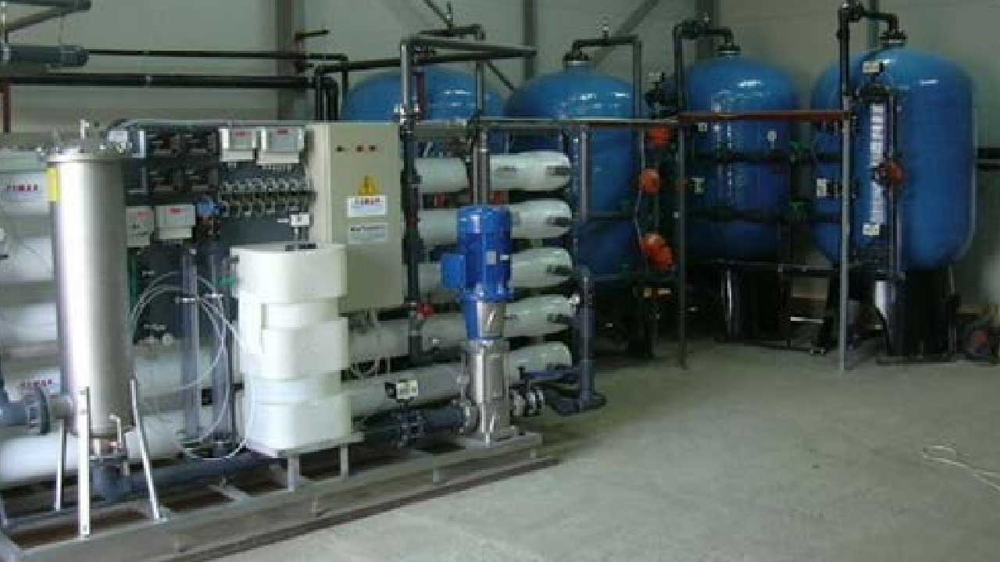
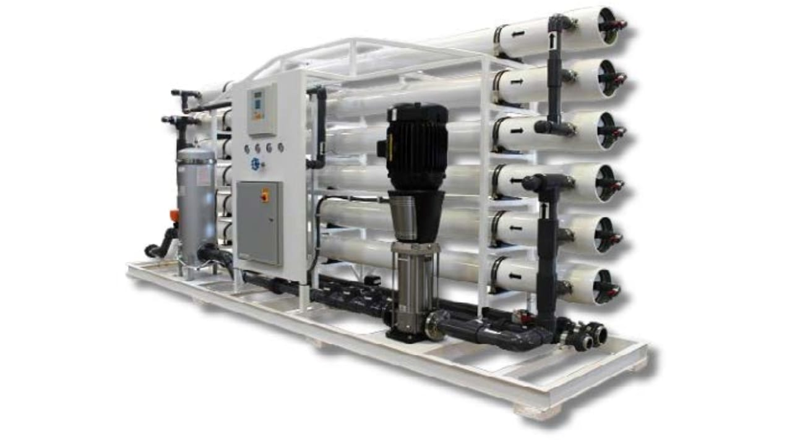
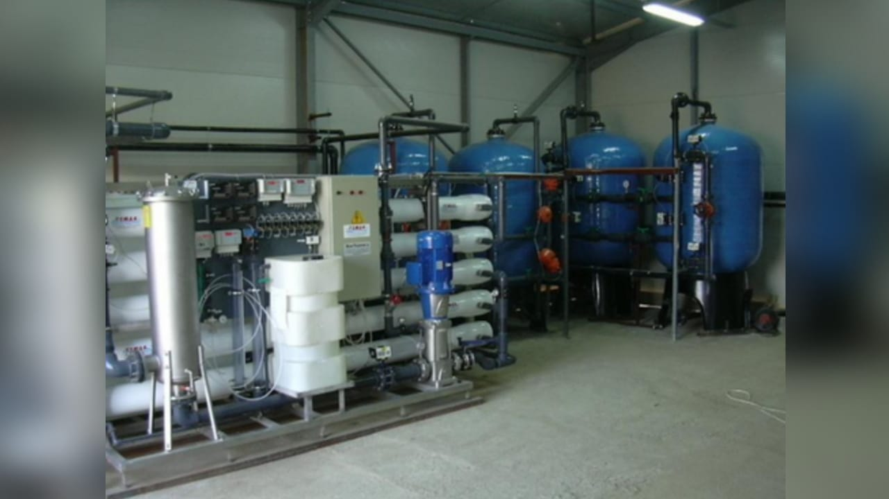
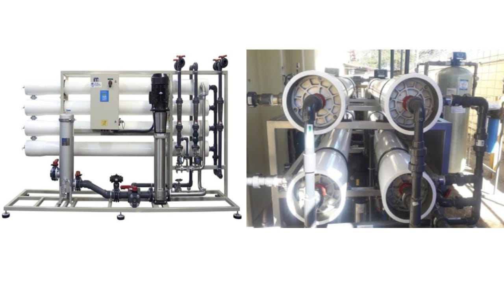
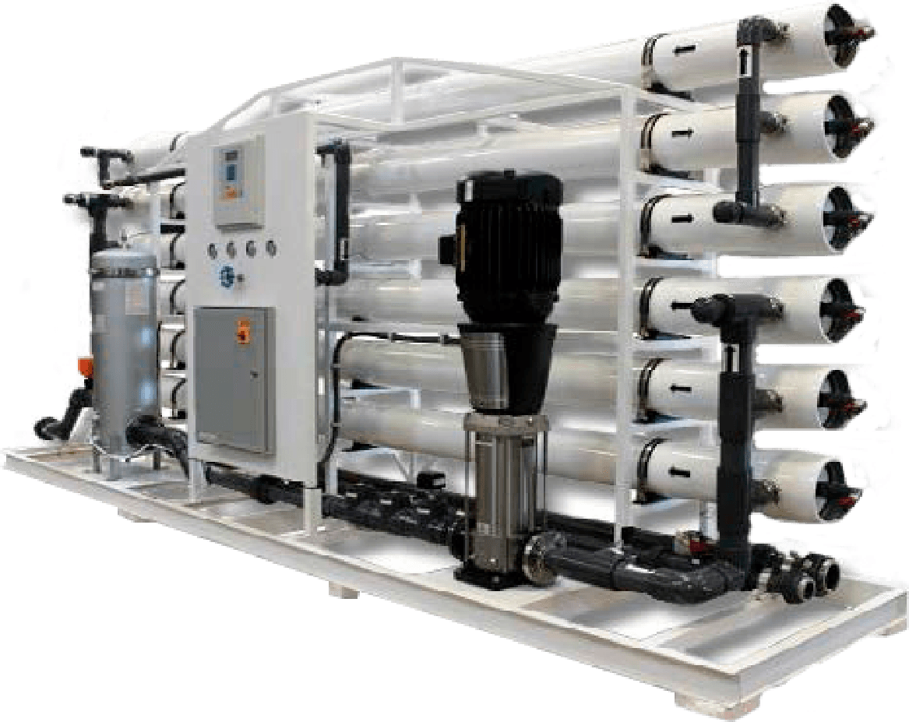
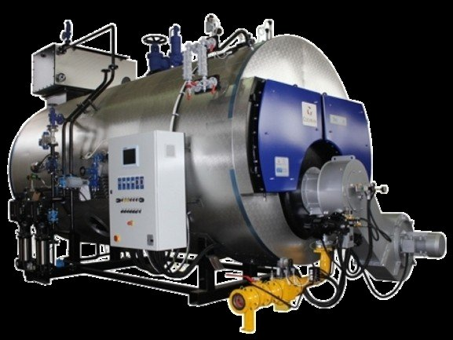
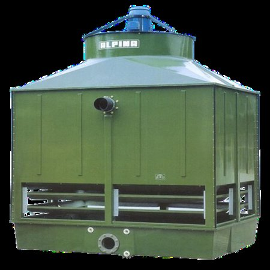

Filtração e Purificação
7 sistemas

Filtração Industrial
Estações de Tratamento de Água (ETA)
Projeto e implementação de ETAs para água potável, industriais e pluviais. Processos completos: captação, decantação, coagulação, floculação, equalização, filtração e desinfecção. Sistemas compactos, modulares e com monitoramento remoto.
Água PotávelIndustrialÁgua de ChuvaModularMonitoramento Remoto
Dessalinização
Dessalinização por Osmose Inversa
Produção de água doce de alta qualidade a partir de água do mar ou salobra. Membranas de 0,001 micron com alta capacidade de retenção de bactérias, vírus e contaminantes químicos. Duplo passo disponível para maior pureza.
0,001 micronTaxa até 90%Sem regenerantesÁgua do mar

Desmineralização
Desmineralização por Osmose Reversa
Remoção de sais dissolvidos, matéria orgânica e micro-organismos para aplicações industriais exigentes. Ideal para caldeiras, farmacêutica, cosmética, alimentos e bebidas. Sistema sem regenerantes químicos, com reuso de água em duplo passo.
CaldeirasFarmacêuticaAlimentos500-1000 STD ate 90%

Adsorção
Sistemas Adsortivos — Carvão Vegetal Ativado
Carvão vegetal ativado granulado produzido a partir da casca de coco. Elevada área superficial microporosa para decloração, clarificação, desodorização e purificação. Configurações manuais e automatizadas. pH ideal 6,8–7,4.
Casca de cocoDecloraçãopH 5,5–8,5Pré-filtragem OR

Troca Iônica
Desmineralização por Troca Iônica
Redução de sais dissolvidos por resinas catiônicas e aniônicas. Configurações: Coluna Dupla (10 a 4 uS/cm), Mixed Bed (1 a 0,1 uS/cm), ou combinadas (abaixo de 0,1 uS/cm). Aplicações em caldeiras, galvanoplastia e indústria química.
Coluna DuplaMixed BedGalvanoplastia0,1 uS/cm

Abrandamento
Abrandamento da Água
Controle, redução e eliminação total da dureza (ions Ca2+ e Mg2+). Resina catiônica sódica que troca Ca/Mg por Na solúvel. Sistemas automatizados em skid. Previne incrustações em caldeiras, lavanderias e torres de refrigeração.
CaldeirasLavanderiasTorresAutomático em Skid

Filtração Natural
Remoção de Ferro / Manganês / Metais Pesados
Leitos filtrantes com Zeólita Clinoptilolita (mineral de cinzas vulcânicas). Alta seletividade iônica, baixa densidade e alta porosidade. Remove amônia, fluoretos e metais pesados sem produtos químicos. Ecologicamente sustentável — não gera passivo ambiental.
Zeólita NaturalSem QuímicosPRFVManual e Automático
Desinfecção
2 sistemas

Desinfecção Física
Sistema de Desinfecção por Ultravioleta (UV)
Esterilização por UV como alternativa ecológica à cloração. Comprimento de onda 240–280 nm ataca o material genético dos micro-organismos, impedindo sua reprodução. Sem formação de subprodutos tóxicos ou carcinogênicos. Disponível em aço inoxidável sanitário.
240–280 nmSem CloroAço InoxAutolimpanteMonitorado
Oxidação Avançada
Geração de Ozônio e Processos Oxidativos
O Ozônio é 200× mais eficiente que o cloro. Extremamente eficaz contra E. coli, Salmonela, Pseudomonas e Cryptosporidium Parvum. Geração automática no local de uso a partir do ar ambiente. Não cancerígeno. Remove ferro solúvel e manganês por oxidação.
200× CloroSem reposiçãoGeração localNão cancerígeno
Alta Pureza
2 sistemas

Ultrapura
Sistemas de Geração de Água UPW e WFI
Abastecimento contínuo de água ultrapura. Condutividade até 16 MΩ/cm (<0,1 μS/cm). Integração de microfiltração/UF, nanofiltração, osmose reversa duplo passo, desgaseificação (GTM) e eletrodeionização (CEDI). Conforme USP e EP para farmacêutica.
16 MΩ/cmFarmacêuticaLaboratóriosCEDISem regenerantes

Sem Químicos
Polarizadores Magnéticos
Magnetos instalados na superfície externa das tubulações criam campo magnético que altera propriedades físico-químicas da água. Previne incrustações e depósitos. Sem consumo de energia, instalação simples, durabilidade ilimitada. Compatível com qualquer posição de tubo.
Sem energiaSem químicosTorresCaldeirasInstalação externa
Sustentabilidade e Reúso
2 sistemas

Reúso
Sistemas de Reúso de Água
Aproveitamento de efluentes sanitários e industriais tratados. Tecnologias MBBR (Moving Bed Bio Reactor) e Ultrafiltração (UF). Redução de até 40% no consumo de água potável. Aplicações: irrigação, descargas, limpeza e torres de resfriamento.
MBBRUltrafiltração-40% ConsumoCondomínios

Efluentes
Estação de Tratamento de Efluentes (ETE)
Sistemas compactos e modulares para efluentes domésticos e industriais. Etapas: gradeamento, desarenação, decantação primária, processos biológicos (anaeróbico e aeróbico), decantação secundária e desinfecção (cloro, ozônio ou UV). Materiais PRFV ou PP.
PRFV / PPModularCONAMACETESBPré-montado
Serviços Industriais Especializados
2 sistemas

Vapor Industrial
Tratamento de Águas para Caldeiras e Geradores de Vapor
Métodos: abrandamento, desmineralização, ultrafiltração, nanofiltração, troca iônica e osmose inversa. Acompanhamento semanal, quinzenal ou mensal com análises em campo e coletas para laboratório próprio. Elimina gases dissolvidos, sólidos em suspensão e sais minerais.
Análise em CampoLab PróprioContrato MensalVapor Seguro

Resfriamento
Tratamento de Torres de Refrigeração e Chillers
Programas de tratamento químico e filtração para torres de refrigeração, chillers e geladeiras industriais. Controle de CaCO3, CaSO4, biocidas e biodispersantes. Inspeções com documentação fotográfica e laudos periódicos. Regime de comodato disponível.
BiocidasComodatoInspeção PeriódicaLaudo Fotográfico